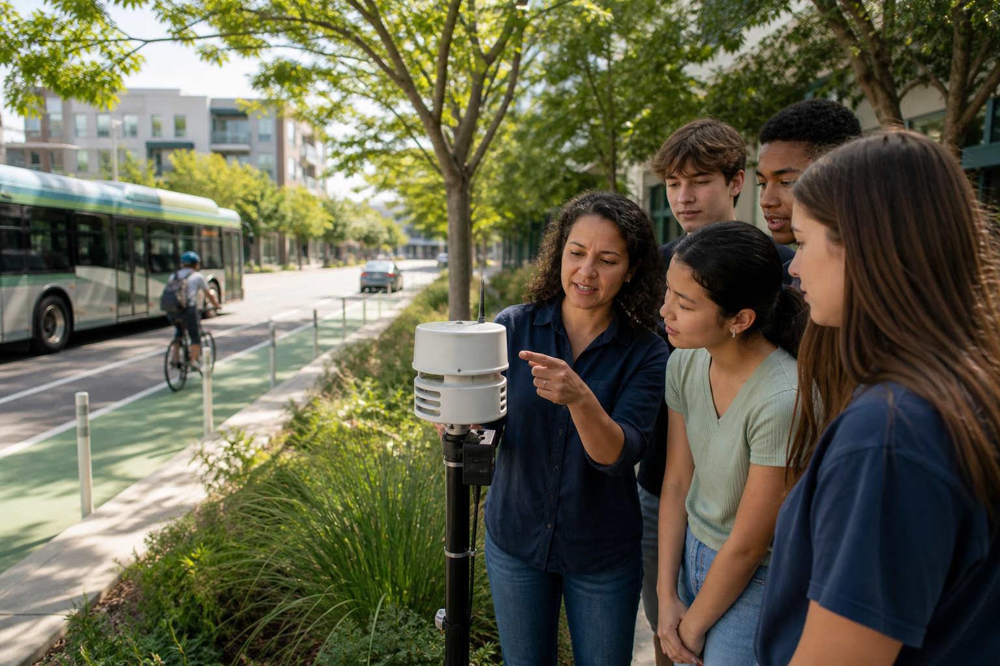

The science is settled
Human activities—principally greenhouse-gas emissions—have unequivocally caused global warming. Every additional increment of warming increases risks to people and ecosystems.
IPCC Synthesis Report ↗Proposed federal legislation · Energy & Environment Committee
The Carbon Pollution Reduction and Clean Air Act of 2026 creates a practical national plan to reduce climate-warming emissions, speed up clean-energy projects, and protect communities with the greatest exposure to unhealthy air.
Purpose & goals
Fossil-fuel pollution warms the climate and contributes to unhealthy air. Federal policy should set a predictable direction while giving states, utilities, businesses, and workers flexible ways to meet it.
Human activities—principally greenhouse-gas emissions—have unequivocally caused global warming. Every additional increment of warming increases risks to people and ecosystems.
IPCC Synthesis Report ↗Transportation, electric power, industry, homes, businesses, and agriculture all contribute to U.S. greenhouse-gas emissions. Effective policy must address more than one sector.
U.S. EPA data ↗Cutting fossil-fuel combustion can reduce both climate pollution and health-damaging air pollutants, helping communities while longer-term climate benefits accumulate.
Climate & health ↗Climate action in practice
Clean electricity, efficient transportation, and local air monitoring turn federal goals into visible improvements in everyday life.

The policy approach
H.R. 2026 pairs measurable emissions targets with competitive grants, worker support, and neighborhood air monitoring. It rewards verified results rather than prescribing a single technology.
Use consistent federal reporting so progress can be verified.
Set phased standards for major carbon and methane sources.
Help states, workers, small businesses, and overburdened communities adapt.
Publish results and let Congress adjust the program using evidence.
Classroom Congress · H.R. 2026
Representative Hancheng Wang
H.R. Number 2026
Be it enacted by the House of Representatives and the United States Senate in Congress assembled, that—
Whereas carbon dioxide, methane, and other greenhouse gases contribute to climate change; whereas the effects of air pollution and climate hazards are not shared equally; and whereas stable national policy can encourage innovation and reduce long-term costs, this Act establishes measurable pollution standards, targeted investment, and transparent oversight.
This Act may be cited as the “Carbon Pollution Reduction and Clean Air Act of 2026.”
(a) “Administrator” means the Administrator of the Environmental Protection Agency (EPA). (b) “Covered source” means a facility reporting at least 25,000 metric tons of carbon-dioxide-equivalent emissions per year under federal greenhouse-gas reporting rules. (c) “Disadvantaged community” means a community facing elevated cumulative environmental, health, or economic burdens, identified through transparent federal screening criteria. (d) “Verified reduction” means a decrease confirmed through EPA-approved monitoring and reporting methods.
(a) Within 18 months of enactment, the EPA shall establish technology-neutral performance standards for covered sources. (b) Standards shall place the United States on a pathway to reduce net greenhouse-gas emissions at least 50 percent below 2005 levels by 2035. (c) Each covered source may comply through efficiency, cleaner electricity, fuel changes, verified carbon capture, or other EPA-approved methods. (d) The EPA shall provide a simplified compliance pathway and technical assistance for small entities.
(a) The Department of Energy shall award competitive grants for grid modernization, energy storage, building efficiency, zero-emission public transit, and charging infrastructure. (b) At least 40 percent of grant benefits shall flow to disadvantaged communities. (c) Projects shall be ranked by verified pollution reduction, cost-effectiveness, reliability, domestic job creation, and community support.
(a) The EPA shall require routine leak detection and timely repair at covered oil and natural-gas facilities. (b) Operators shall report major releases through a public database. (c) Grants and technical assistance shall help small operators adopt cost-effective monitoring equipment. (d) The EPA shall update standards as measurement technology improves.
(a) The EPA shall expand community air-monitoring grants near major pollution sources and freight corridors. (b) Data shall be posted in accessible formats and in commonly spoken local languages. (c) When monitoring shows repeated violations of health-based standards, regulators shall publish a corrective action plan within 120 days.
(a) Congress authorizes $12 billion annually for fiscal years 2027 through 2036. (b) Funding shall come from existing federal energy and environmental appropriations, pollution-related civil penalties, and an annual fee on covered sources that fail to meet required performance standards. (c) No more than 5 percent may be used for federal administration. (d) The Government Accountability Office shall audit the program every two years.
(a) The Departments of Labor and Energy shall support apprenticeships and wage-replacement assistance for workers displaced by facility closures directly connected to this Act. (b) The EPA shall publish annual emissions, compliance, grant, health, and employment indicators. (c) Congress shall review the Act after five years and may revise targets based on technology, reliability, cost, and public-health evidence.
(a) This Act shall take effect 180 days after enactment unless a section states otherwise. (b) If any provision is held invalid, the remaining provisions shall not be affected.
By combining clear standards, flexible compliance, community protection, and public oversight, this Act would reduce climate pollution while supporting reliable energy, healthier air, and a fair transition for American workers and communities.
Letter to a representative
The letter below is formatted double-spaced as required by the assignment.
August 30, 2026
The Honorable Mike Levin
United States House of Representatives
Washington, DC 20515
Dear Representative Levin:
I am writing to ask for your support for the Carbon Pollution Reduction and Clean Air Act of 2026. Climate change can feel like a problem that is too large for one community to solve, but the pollution driving it comes from choices that public policy can influence: how we produce electricity, move people and goods, operate buildings, and control industrial leaks. A national framework can turn separate local efforts into steady, measurable progress.
The need for action is both global and local. The Intergovernmental Panel on Climate Change concludes that human-caused greenhouse-gas emissions have unequivocally warmed the planet. In the United States, transportation, electricity generation, industry, buildings, and agriculture all contribute to emissions. Climate hazards also increase risks from extreme heat, wildfire smoke, flooding, and other threats to public health. Communities already burdened by poor air quality often have the fewest resources to prepare.
My proposal responds with a balanced plan. It directs the EPA to create phased, technology-neutral standards for large pollution sources while allowing multiple methods of compliance. It funds cleaner electricity, efficient buildings, public transportation, and community air monitoring. It also requires transparent annual reporting, independent audits, assistance for small entities, and support for workers affected by the transition. These guardrails are meant to make the policy ambitious, practical, and accountable.
I recognize that any major environmental policy raises questions about cost and reliability. That is why the bill ranks projects by verified results and cost-effectiveness, limits administrative spending, requires a five-year congressional review, and does not mandate a single technology. Clear long-term rules can give utilities and businesses time to plan instead of reacting to uncertain short-term changes.
Please support legislation that reduces carbon and methane pollution while protecting workers, ratepayers, and communities. Federal leadership can help the United States build cleaner infrastructure, improve public health, and leave the next generation a safer climate. Thank you for considering this proposal and for your service to our district.
Sincerely,
Hancheng Wang
Works cited
MLA-style bibliography · All web sources accessed 30 Aug. 2026.
The choice before Congress